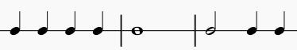
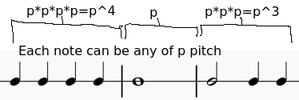
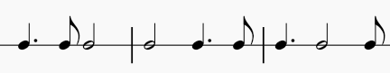

How Much Music Is There?
The story behind the paper
A question from band class
I was a junior in high school, a student who was very eager to prove what I could do with mathematics. I was also in the band. One day our band teacher put on a documentary about how vast music is, and how we will never run out of new music to write.
It was meant to be inspiring, but what I came away with was a question: how much music is there, really?
Part of the answer is easy. There is infinitely much music, because a song can go on forever. If you want something closer to a proof, take every piece of music ever written, play them one after another, and add one more measure at the end. You have just written a piece that never existed before, and you can always do it again.
That answer felt like a cheat. So I narrowed the question: how many single measures of 4/4 music are there, within reasonable limits? I settled on three:
- pitches come from the range of a normal piano;
- notes can be anything from sixteenth notes up to whole notes, including dotted notes;
- volume, tempo and style don't count.
Inside those limits the answer had to be a finite number, and I was sure I could find a formula for it.
Getting halfway there
I started with pitch. Call the number of pitches a note can take \(p\). What \(p\) stands for decides what you are counting. If \(p\) is the number of keys on a piano, 88, then you are counting the ways a measure can sound. If instead you count every way a note can be written within the piano's range, so that C♯ and D♭ are different, then you are counting the ways a measure can be written. Rests fit in neatly as one more option: \(p\) is the number of pitches plus one.
Then rhythm. Here are three rhythms, with pitch ignored:

Every note in a rhythm can independently be any of the \(p\) options, so a rhythm with \(n\) notes can be filled in \(p\times p\times\cdots\times p = p^n\) ways:

This had a consequence I liked: only the number of notes matters. Any two rhythms with the same number of notes can be filled in the same number of ways, whatever note values they use and in whatever order:

So the rhythms could be grouped. If a rhythm uses \(n_a\) whole notes, \(n_b\) dotted halves, \(n_c\) halves and so on down to sixteenths, the number of different orders of those notes is a multinomial coefficient. The number of measures built from that collection of notes is
\[ p^{\,n}\cdot\frac{n!}{n_a!\,n_b!\,n_c!\cdots}. \]Add that up over every possible collection of notes, and you have the answer.
That was where I hit a wall. I had no way to list every collection of notes that fills a measure. Writing them out by hand would take forever, and I couldn't find a formula that produced them. I put the problem down.
Years later
I left the problem alone for years and mostly forgot about it. I finished high school, earned a degree in computer science, and started working as a software engineer. Then, one day, the question came back to me, and this time I had better tools to attack it with.
The first step was to turn the music into arithmetic. Give each note value its length in beats: a whole note is 4, a dotted half 3, a half 2, a dotted quarter \(3/2\), and so on down to the sixteenth at \(1/4\). A measure of 4/4 is then any list of these numbers that adds up to 4:
\[ \Big\{\,4,\;3,\;2,\;\tfrac32,\;1,\;\tfrac34,\;\tfrac12,\;\tfrac38,\;\tfrac14\,\Big\}. \]Fractions are awkward, so it is easier to count in 32nd notes, the largest piece that divides every value evenly (the dotted sixteenth is three 32nds). Then the values are \(32, 24, 16, 12, 8, 6, 4, 3, 2\), and a measure is 32 units long.
My old plan was still to list every collection of notes that adds up to 32 and plug each one into the high-school formula. A computer could do that. But looking at the formula again, I noticed something that made the listing unnecessary.
The missing half
Look again at what \(n!/(n_a!\,n_b!\cdots)\) counts: the different orders of a collection of notes. Add it up over every collection, and you are simply counting every ordered rhythm, one sequence of note values after another, that fills the measure. Multiply by \(p^n\), and you are counting every ordered sequence of notes with pitches. Grouping by collection had been a detour. I could count the sequences directly.
And sequences are easy to count one note at a time. Every measure starts with some first note. That note has one of the nine lengths \(d\), it is one of \(p\) pitches or a rest, and whatever comes after it is just a shorter measure, \(t-d\) units long, which can be filled in any way at all. So if \(f(t)\) is the number of ways to fill \(t\) units,
\[ f(0)=1, \qquad f(t) = p\,\big(f(t-2)+f(t-3)+f(t-4)+f(t-6)+\cdots+f(t-32)\big), \]leaving out any term where \(d>t\). Start from \(f(0)=1\) (there is exactly one way to fill nothing) and work upward: \(f(1)\), \(f(2)\), …, \(f(32)\). That is 32 small steps. The question that had stopped me in high school took a few lines of code to answer.
Because the recurrence and the high-school formula count exactly the same thing, they must agree. Checking them against each other by computer confirmed that they do. Seen this way, the high-school work wasn't wrong; it was half of the answer, and this was the other half.
A subtlety about silence
There was one thing my younger self had glossed over. Treating a rest as "one more pitch" counts a half rest and two quarter rests as different measures. On paper they are different, but they sound exactly the same. So "ways to write a measure" and "ways a measure can sound" are genuinely different questions, and the second needs back-to-back rests merged into one silence. A small change to the recurrence handles this: it tracks whether the measure so far ends on a note or on a silence, and never lets two silences touch. The paper gives the details.
The answer
In the end there are two answers, because there were always two questions.
How many ways can a single measure of 4/4 be written? Using every note on the piano spelled with sharps and flats, the way most music is actually printed, plus rests:
207,500,798,751,709,995,948,691,861,325,549,855
That is about \(2.08\times10^{35}\).
How many ways can it sound? Counting each of the 88 keys once, and merging rests that sound the same:
40,935,886,428,964,117,905,911,001,094,097
That is about \(4.09\times10^{31}\), roughly five thousand times fewer. My original high-school formula, with 88 keys plus a rest, lands in between at about \(4.10\times10^{31}\). It turns out to mix the two questions, treating rests as written and pitches as heard.
Some of what the numbers show surprised me. There are only 272,163 different rhythms in a measure of 4/4, barely over a quarter million, but the busiest rhythms dominate everything: measures of fifteen or sixteen notes make up about ninety-five percent of all written measures, because each extra note multiplies the possibilities by 155. The single rhythm of sixteen sixteenth notes accounts for more than half of them on its own.
And the scale is hard to picture. Three measures in a row already give about \(7\times10^{94}\) different-sounding phrases, far more than the roughly \(10^{80}\) atoms estimated to be in the observable universe. Listening to every distinct-sounding single measure at a brisk 120 beats per minute would take around \(2.6\times10^{24}\) years, about 190 trillion times the age of the universe.
But what really gave me a sense of what I had calculated was thinking about what is inside that number, \(2.075\times10^{35}\). Almost every measure of music ever written is in there: every 4/4 measure of every melody line, apart from the things my confines leave out, like chords, ties, triplets and notes faster than a sixteenth. All of Bach, Mozart and Beethoven is in there, one measure at a time. The newest song that came out last week was already accounted for before anyone wrote it. Any measure you can think of right now, on the fly, even if it is complete musical garbage, is already part of this number. It isn't an estimate of how much music there is. Measure by measure, it simply is the amount of music that exists.
And the parts it leaves out are not out of reach. A measure in 3/4, a range wider than the piano, ties, quintuplets: each one is just a small change to the same formula, and the calculator already handles other time signatures, other pitch ranges and triplets. Whatever asterisk you want to put on this number, the same method can count it.
Adding triplets
My high-school confines had a gap that any band student would notice: no triplets. Triplets are everywhere in real music, so I wanted to know how much they change the count. I allowed the common ones, eighth-note, quarter-note and half-note triplets. Sixteenth-note triplets stayed out, because a triplet sixteenth is shorter than a sixteenth, and I had already decided nothing would be.
Two things had to change. First, a triplet eighth lasts a third of a beat, which is not a whole number of 32nds. The grid had to get finer: 96 units per whole note is the smallest one on which every value, from the dotted sixteenth to the triplet eighth, comes out whole. A 4/4 measure becomes 96 units long, and a sixteenth becomes 6.
Second, a triplet is not really a single note. It is a group: three triplet eighths, or a triplet quarter and a triplet eighth in either order, filling exactly one quarter note. So I treated each complete group as one block. Then the recurrence barely changes. A measure still starts with some first block, which is now either an ordinary note (\(p\) ways) or a whole triplet group (\(p^3+2p^2\) ways, one term for each of its three rhythms), and whatever follows is still just a shorter measure. Triplets are one more kind of move in the same "ways to make change" counting.
The sounding count was the hard part. A rest inside a triplet group merges with rests outside it, and different blocks can end up sounding the same. For example, a triplet eighth followed by a triplet-quarter rest sounds exactly like a triplet eighth followed by two triplet-eighth rests. To count each sound once, the addendum writes every measure out as a string of letters (note starts here, note continues, silence) and counts the distinct strings with a small automaton.
Triplets more than doubled the number of rhythms, to 579,888, but they moved the totals much less. With triplets, a measure can be written in about \(2.21\times10^{35}\) ways and can sound in about \(4.51\times10^{31}\), only 7% and 10% more. The busy sixteenth-note rhythms still dominate, and triplets can't make a measure any busier.
Back to band class
The documentary was right, then, and not just for the cheap reason. Even with every limit I could think of (one bar, one note at a time, nothing shorter than a sixteenth, nothing outside the piano), there is more music than there is universe to hold it. We are not going to run out.
You can try other ranges, time signatures, note values and triplets on the calculator, or read the full derivation in the paper and the triplet extension in the addendum.